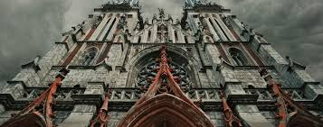
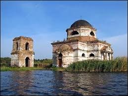
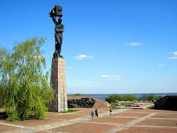

Костел Святого Миколая
Постройка церкви Св. Николая началась по конкурсному проекту архитектора С. В. Валовского в 1899 году. Разработка и строительство здания производились под руководством известного киевского архитектора В. В. Городецкого. Церковь, построенная в стилизованных готических формах с высокими стрельчатыми башнями и шпилями, отличается стройными пропорциями, лёгкостью, ясностью композиционной структуры. Сложные условия строительства и архитектурного решения побудили архитекторов применить новаторские на то время инженерные технологии. Инженером А. Э. Страусом впервые в тогдашней строительной практике была предложена закладка фундамента на бетонных сваях, а в конструкциях широко использовался железобетон — новый строительный материал. Костёл был богато украшен как настенными росписями, так и витражами, которых насчитывалось 40 (не сохранились). В 1909 году церковь была освящена. Храм был закрыт и разграблен около 1933 года, духовенство подверглось репрессиям. В здании разместились склады. В 1943 году во время войны, храм сильно пострадал от артиллерийского обстрела, горел. В послевоенные годы здание церкви было частично отреставрировано и перестроено под нужды Киевского государственного областного архива. В 1978 году было принято решение Совета Министров УССР о создании в Киеве Республиканского Дома органной и камерной музыки и переоборудовании под концертный зал помещения бывшего Николаевского костёла. Одновременно с реставрацией проводилась и частичная реконструкция здания. С 1980 года Николаевская церковь стала функционировать в качестве концертного зала Дома органной и камерной музыки.
Спас на воді
Спасо-Преображенська церква[1] (Гусинська церква, Затоплена церква, Спас на воді) — пам'ятка архітектури 19 століття, що вціліла від затопленого водами Канівського водосховища села Гусинці на Київщині. Нині церква та дзвіниця стоять на острівці за 200 метрів від берега
букринський плацдарм
Букри́нский плацдарм — один из плацдармов на западном берегу реки Днепр, в районе Великого Букрина (80 км юго-восточнее Киева), захваченный в сентябре 1943 года войсками Воронежского фронта (ген. армии Н. Ф. Ватутин) в ходе Битвы за Днепр 1943 года. Советским войскам противостояли части северного фланга 8-й полевой армии вермахта[
Більше інформації у вікіпедії